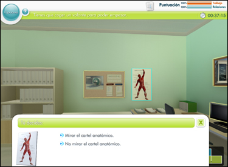

| La reglas de "la vida simulada" |
|
| Todo lo que vas a encontrar en el simulador es tan sencillo y tan complicado como en la vida real. Puede que al principio te encuentres un poco perdido, pero sólo tienes que mirar a tu alrededor. Verás que hay varios "elementos interactivos" integrados dentro del escenario en el que te encuentres. |
|
 |
|
Si desplazas el ratón sobre los mismos, tu "yo virtual" te indicará lo que puedes hacer. Si haces clic sobre el elemento pasarás a interactuar con él.
Luego podrás escoger la acción que deseas realizar sobre el objeto y esperar el resultado de la misma. Ten cuidado, porque todos los "elementos" tienen su utilidad y te corresponde a ti descubrir cuál es.
Lo único que necesitas es explorar el escenario e ir interactuando con los elementos igual que lo harías en la vida real. En algunas ocasiones te encontrarás con pequeños juegos o pruebas. Para completarlos sólo tienes que seguir las instrucciones de pantalla. Practica la que será tu profesión en un futuro próximo, y aprende todo lo que puedas. |
|
| » Volver |